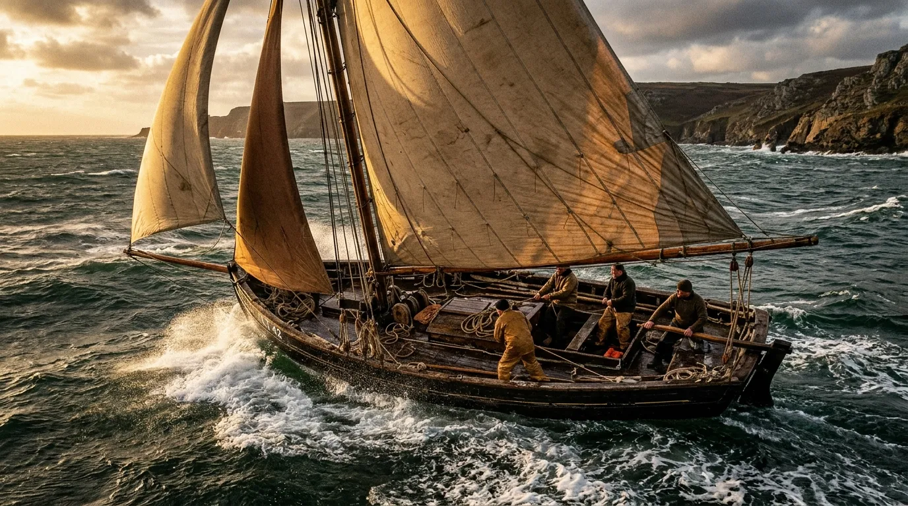
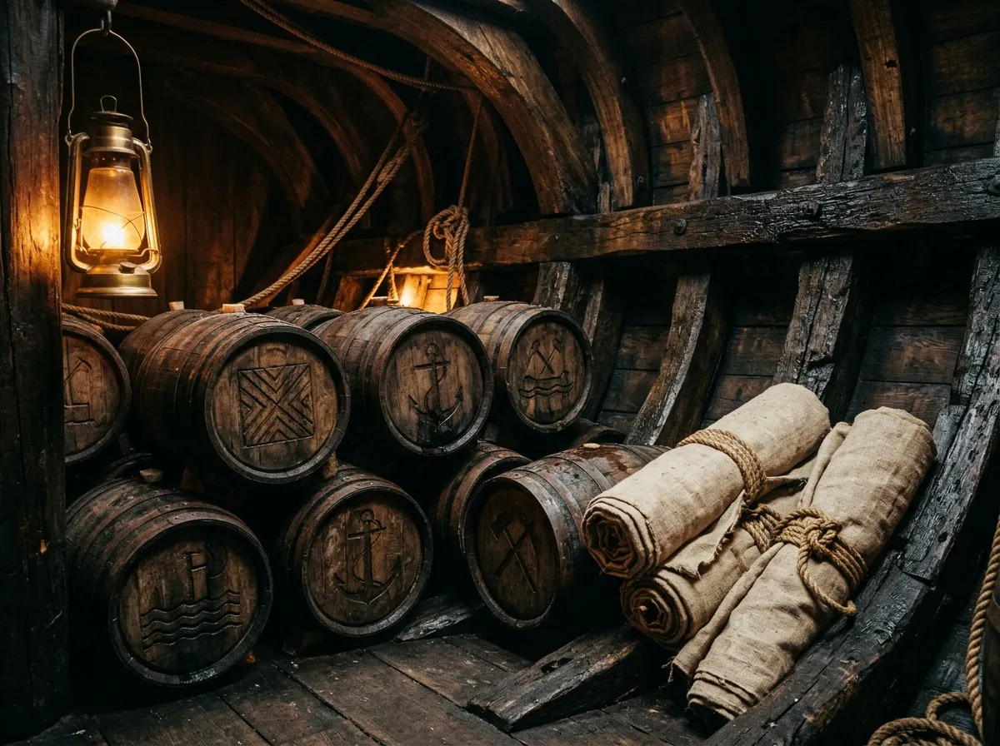
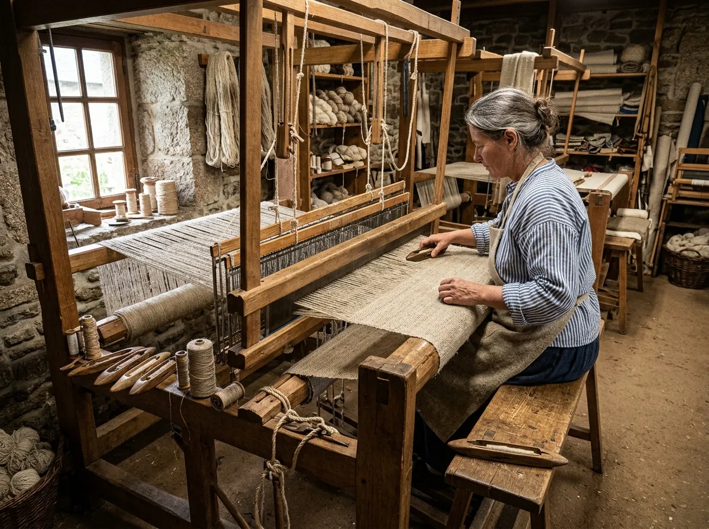
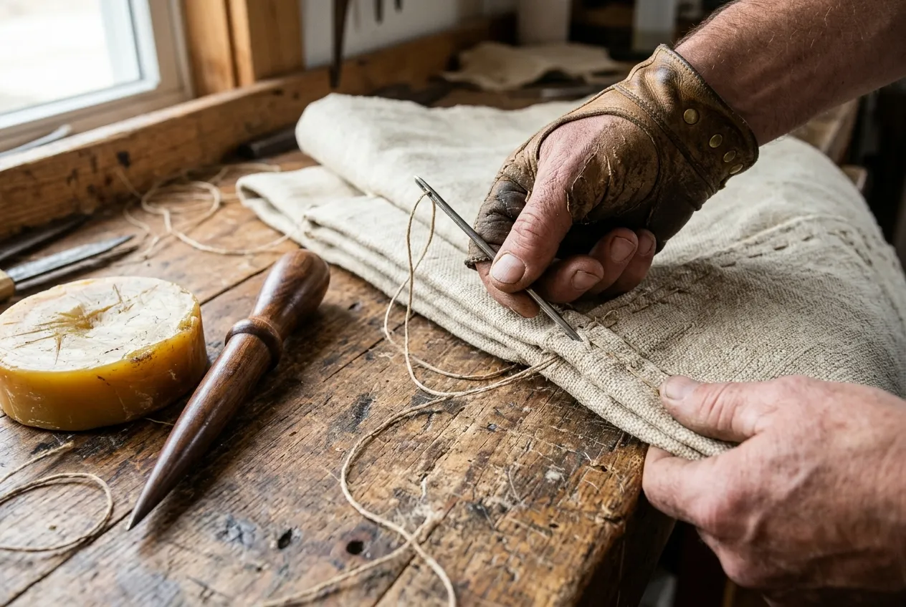
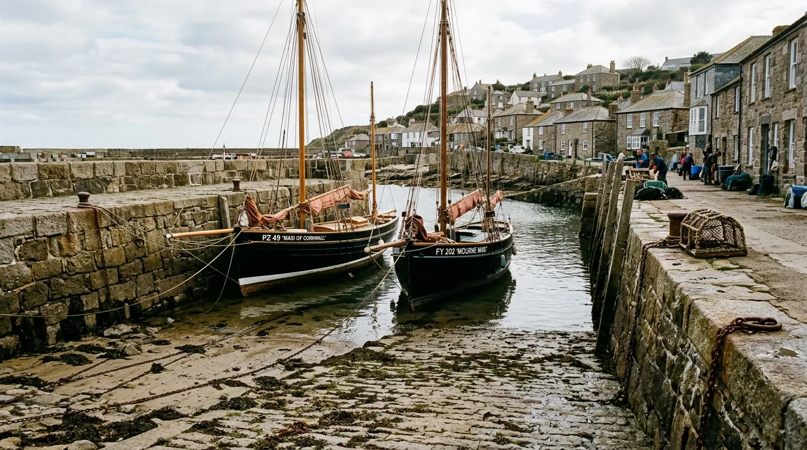

Open-Ocean Sail-Freight Under Traditional Hand-Loomed Flax Canvas
The M-28 Lugger & Loom Guild unites Cornish gaff-cutter mariners and Breton weavers in an enduring
maritime barter alliance.
Since 1928, the M-28 Guild has sailed bulk cargo across the Celtic Sea and Western Approaches using
exclusively wind, timber, and hand-loomed flax. Our three working gaff luggers carry Guérande salt, Breton
linen, oak-bark leather, and Cornish cured fish across sixty-mile open-water tidal gates without burning a
single litre of marine diesel. Every bolt of sailcloth driving our fleet is hand-woven on wooden looms in
Douarnenez and hand-stitched by Mount’s Bay sailwrights into storm-proof working canvas.
Plate I. Gwenevere’s stem lifting to a Mount’s Bay swell, 14 knots of westerly over the quarter.
The Flagship Column
The Mount’s Bay Accord and the Bilateral Loom Treaty

Gwenevere close-hauled off the Lizard, working her flax canvas hard on the spring ebb.
When coal steamships and petroleum freighters drove traditional working sail from the English Channel, the
gaff-rigged lugger skippers of Newlyn refused to break up their wooden hulls. Across the water in
Finistère, the handloom linen weavers of Douarnenez faced an identical collapse as industrial synthetic
mills flooded European textile markets. In October 1928, twenty-eight master mariners and twelve master
weavers met at Newlyn Old Quay to sign the M-28 Barter Accord, pledging that so long as Breton looms threw
shuttle for Cornish sailmakers, Cornish keels would carry Breton salt, cider, and flax free of middleman
levies.
So long as Breton looms threw shuttle for Cornish sailmakers, Cornish keels would carry Breton salt.
Ninety-eight years later, that working covenant remains unbroken by paper contracts or corporate shipping
lines. Our vessels run on an absolute zero-carbon operating model governed by lunar tides, barometric
trends, and physical sail-handling skill. The weavers supply sixteen-ounce long-staple flax canvas
proofed with boiled pine resin and mutton tallow, while our skippers deliver raw fleece, dried pilchards,
and copper sheet directly into Breton fishing coves. By maintaining our own slipways, ropewalks, and
sail-lofts, the guild preserves an independent maritime supply chain that answers only to wind velocity
and the integrity of hand-stitched hemp seams.
The Working Wooden Luggers of Mount’s Bay and Douarnenez
None of the three is a museum piece. Each one earns her berth by hauling tonnage through the tidal gates
of the Western Approaches, and each is kept alive by the freight she carries. A hull that stops working
starts to rot, so ours do not stop.
Gwenevere FY-12
Built 1914 at Porthleven. A 48-foot gaff lugger, larch planking on oak frames, with an 18-tonne dry
cargo hold. She is the primary carrier on the Newlyn–Douarnenez run and has taken the Chenal du Four
at slack water more times than her skipper can count without a ledger.
Length
48 ft
Hold
18 tonnes
Rig
Gaff lugger
Morwenna PZ-44
Built 1922 at St Ives. A 54-foot double-ended lugger with English elm bottom boards and a 24-tonne
hold. She is rigged for the rough passages across the Irish Sea to Cork, where the swell stacks up
against the Old Head of Kinsale and a flax main earns its keep.
Length
54 ft
Hold
24 tonnes
Rig
Double-ended lugger
Le Forban DZ-18
Built 1926 at Camaret. A 42-foot Breton dundee rig on oak frames, with a 14-tonne hold. She is
specialised in barrelled perry and coastal salt haulage, working the short hard hops between
Guérande, Douarnenez and Mount’s Bay with a mizzen sheeted flat.
Length
42 ft
Hold
14 tonnes
Rig
Breton dundee
Maintenance Note
Every hull undergoes annual careening and copper sheathing inspections on the Newlyn slipway every
spring equinox. Planks are tapped, seams raked and payed, and nothing goes back in the water until
the shipwright has put a knife into every suspect fastening.
A timber hold breathes. Salt stays dry, leather does not sweat and cask-bound cider rides without the
heat spikes of a steel box on a quayside. These are the four cargoes the covenant was written to move.

Casks chocked and linen lashed in Morwenna’s hold, lantern-lit before the Cork crossing.
Tile I
Douarnenez 16-oz Unbleached Flax Cloth
Heavy working sailcloth and agricultural sacks, cut from 120-metre bolts hand-loomed from rain-retted
Breton flax. Rolled on oak cores and stowed amidships, clear of the bilge.
120 m per bolt · 16 oz per sq yd
Tile II
Guérande Hand-Harvested Flower of Salt
Coarse grey mineral salt and fleur de sel, raked from the Guérande pans and packed in oak casks to
prevent sea-air moisture uptake on a wet passage.
18 tonnes per Gwenevere run
Tile III
Mount’s Bay Oak-Bark Pit-Tanned Leather
Heavy bridle and boot hides tanned for 14 months in oak bark liquors, impervious to saltwater rot and
carried flat-stacked between dry hessian.
14 months in the pit
Tile IV
Heritage West-Country Perry and Cider Casks
Dry bittersweet cider and perry shipped in seasoned French oak hogsheads, wedged and chocked by the
cooper before a single line is cast off.
A sixteen-ounce flax cloth weighs sixteen ounces to the square yard, with a warp and weft count tight
enough that a bolt stands upright when stood on its end. Synthetic cloth fails under months of
ultraviolet and salt; natural flax does the opposite. It takes up water, the fibres swell, and the weave
tightens, so a sail that has been through one gale pulls harder and stands flatter in the next.
The seams are rubbed by hand with beeswax and Stockholm pine tar until the thread glistens, then proofed
with rendered mutton tallow. Brass grommets are worked through the cloth rather than punched, and the
hemp boltrope is marled to the leech with a hitch every hand’s breadth, so the rope carries the load and
the canvas only has to hold its shape.
3-plyScottish hemp thread, waxed in the hank
5 per inchstitches, every seam
Double-needleflat-felled seams, two rows
Cowhidechafe guards on every clew

Loom workshop, Douarnenez: one bolt takes a weaver eleven working days.

Newlyn sail-loft: palm, needle and a cake of beeswax.
Admiralty Logbook Entries and Tidal Gate Coordinates
A sailing schedule is built on tidal gates, not timetables. We leave on the first of the ebb, hold the
stream where it runs with us and anchor where it does not. Four recent runs, entered as the skippers
wrote them.
Commercial passages under sail, Voyages 114 to 117
Voyage
Passage
Distance
Time
Conditions
Cargo
114
Newlyn Old Quay to Douarnenez Basin
112 nm
17 h 40 min
Peak speed 8.4 knots
Zero fuel expended
115
Douarnenez to Baltimore, West Cork
240 nm
38 h 15 min
Running before Force 6 south-westerly
18 tonnes salt delivered intact
116
Kinsale to Mount’s Bay
168 nm
26 h 50 min
North-westerly passage
12 tonnes malted barley and wool
117
Penzance to Île de Batz
96 nm
14 h 20 min
Summer neap tide run
8 tonnes cider casks
Swipe the ledger sideways to read every column ↔
Footnote. Zero-carbon transport is audited from the logbook, not claimed: every hour under way is signed
for by the skipper and the mate, and every passage is planned against the barometric trend, the tidal
atlas for the Western Approaches and the morning’s Shipping Forecast. 568 nautical miles in these four
runs, no engine in any of them.

Newlyn Old Quay at low water: sails brailed up to dry, pots stacked, hawsers flaked down.
We were hove-to off the Lizard in October with the sea running green over the rail, double-reefed
in Breton flax. The canvas wept water and held. I walked her seams at dawn and there was not a
single stitch out of place.
Jowdy TregurthaMaster of the Lugger Gwenevere, Newlyn
Every winter the whole village hears the looms through the walls. When the cloth we wove in
January comes back into Douarnenez as sacks of barley and casks of cider, the street goes quiet to
watch it unloaded. That is pay you can eat.
Yvon Le BerreHead Weaver, Douarnenez Loom Workshop
Cured pilchards and Guérande salt keep best where the air moves. A canvas hatch lets the hold
breathe and a steel container sweats it out. I have opened casks after nine days at sea that were
drier than the day I coopered them.
Tamsin PenroseCooper & Cargo Master, Mount’s Bay Cellars
Charter Supercargo Space for the 2027 Sailing Season
We book by the tide, not by the quarter. Each season has one window that suits each commodity and a
hold that fills in the order the manifests arrive. Tell us what you are moving, where it is lying and
which window you want, and the supercargo will answer within three working days.
Spring Equinox Run
Departures around the March springs, after careening. Salt, leather and linen north to Mount’s Bay.
Midsummer Neaps
Gentle streams for casks and fragile pottery. Short hops to Île de Batz, Penzance and the Scillies.
Autumn Harvest Gales
Cider, malted barley and wool, run before the equinoctial south-westerlies to Cork and Baltimore.
The guild is registered with the International Working Sail Association as an operating sail-freight
cooperative. Every consignment leaves the hold under a hand-stamped seal of wax and ink, struck at Newlyn
or Douarnenez before the hatch is battened, which certifies wind-powered transit under hand-loomed flax
from the first lashing to the last.